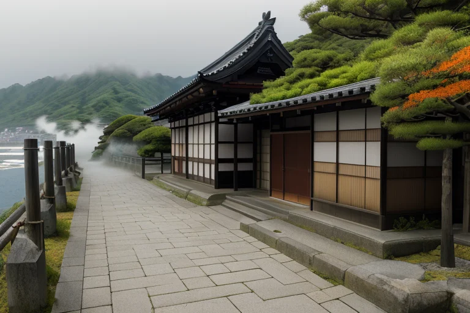

第一章 現実の愛媛
あなたはまだ気づいていない。この土地にも、王がいることを。
道後温泉本館の振鷺閣は、朝もやの中に静かに佇んでいた。湯気が石畳を這い、百年を超える木造建築の梁からは、かすかな軋みが定期的に漏れる。それは単なる老朽の音ではない。列島の歪みが、この地の地下深くで蓄積され、微かに放出される音だ。松山城の石垣に手を当てれば、冷たい石の奥から、巨大な力が押し合う地鳴りが伝わってくる。歪みの列島・日本において、愛媛は特に複雑な地層の接点に位置し、絶え間ない微調整を必要としている。
人々はそのことを知らない。下灘駅の無人ホームで海を眺め、しまなみ海道を渡る風を感じ、内子の町並みで白壁に残る時間を慈しむ。彼らの日常は、みかん畑が織りなす緑と橙のグラデーション、じゃこ天の揚がる匂い、道後の湯に浸かる安堵によって構成されている。しかし、その平穏の底では、ある「封印」が、長い眠りについていた。柑橘の甘い香りに混ざり、ほんのりと、鉄のような、言葉にならない緊張が漂う。
第二章 歪みの兆候
松山城の石垣に、微かなひびが走った。それは地震計が捉えるには小さすぎ、観光客の目には風化としか映らない、ごく僅かな歪みだった。しかし、城天守に佇むエヒメリア・リリックの長い睫毛が、かすかに震えた。彼女の耳には、石の呻き、木の軋み、そして地底深くから湧き上がる、言葉にならない「うめき」が届いていた。
「リリシア」と王が囁くと、傍らで詩集を繙いていた主席妖精が顔を上げた。「柑封印の結界に、乱れが生じています。特に、瀬戸内の海流を鎮める『潮鎮めの詩』の一部が、かすれ始めている」
柑橘畑から上がってきたミカナリアの手には、いつもより色の薄い、小さな青みかんが握られていた。「温暖波も不安定です。このままでは、次の歪みの波が来た時、調整が間に合わないかもしれません」
王は窓から瀬戸内の海を望んだ。しまなみ海道を結ぶ島々の緑が、なぜか霞んで見える。封じられていた力が、長い眠りから目覚めようとする予感。それは災害そのものではなく、人々の心に染み入る、言い知れぬ不安という形で、まず現れ始めていた。
第三章 王の葛藤
松山城の石垣に手を当てると、冷たい感触の奥から、微かな軋みが伝わってくる。地中の歪みではない。城下の町に暮らす人々の、言葉にならない不安の波だ。道後の湯の湯気のように、街の隅々から立ち昇り、やがて重い雲となる。
「解放すれば、一時的に歪みを鎮められるでしょう」リリシアが囁いた。「封じられた言霊の力で、人々の不安を言葉に変え、霧散させることができます」
「だが、それはこの国の均衡を乱す」王は答えた。柑封印は、感情進化が危険な領域に達したかつての自分自身を、自らが封じたものだ。解放は、制御を超えた感情の奔流を招くかもしれない。下灘駅で無言で海を眺める老人の背中に、内子の町並みをそっと撫でる午後の光に、王は問いかける。言葉は、本当に救いとなるのか。それとも、封じられてきたのは、救えなかったという自らの無力感そのものなのか。
王は目を閉じた。掌で感じる石の冷たさが、唯一のよりどころだった。
第四章 妖精との対話
松山城の石垣に腰を下ろし、王は妖精リリシアの語りを聞いた。風が、柑橘の甘い香りを運んでくる。
「あの日、あなたは言葉を失いました」とリリシアは言う。その声は、道後の湯から立ち上る湯気のように柔らかく、そして儚かった。「正岡子規が『柿くへば鐘が鳴るなり法隆寺』と詠んだその日、この地に大きな歪みが生じようとしていました。あなたはそれを鎮めるため、己の全ての『感情』を言葉に込め、詠唱した。それは成功し、歪みは最小限に抑えられました。しかし、その言葉の力は、詠ったあなた自身をも飲み込もうとした」
王は無言で石垣を見つめる。その表面には、無数の言霊の痕跡が、かすかに金色に光っていた。
「あなたは自らを救えなかった。だからこそ、その暴走する感情と言葉の力を、この『柑封印』に封じたのです。松山城の石に、道後の霊泉に、しまなみを繋ぐ波に。あなたは自分自身を、この土地そのものに分散して封印しました」
リリシアが王の肩に触れる。その手は、今治タオルのように柔らかく温かい。
「封じたのは力だけではありません。『言葉で救えなかった』という、あなたの絶望そのものです」
海から潮風が吹き、柑橘の香りがかき消された。王の胸に、封印された何かが、微かに疼いた。
第五章 微調整と余韻
下灘駅のホームに、夕陽が水平に伸びていた。海は金色に溶け、列車の通過後も残る微かな振動が、石の床から伝わってくる。エヒメリアはその振動に耳を澄ませた。封印の亀裂から漏れる、歪みの波長。それは、かつて彼女が救えなかった人々の、言葉にならない嘆きに似ていた。
彼女は目を閉じ、掌を石畳にそっと触れた。封印の修復は、巨大な力を振るうことではない。漏れ出す感情の波を、ひとつひとつ拾い上げ、土地が耐えられる形に整え直す作業だ。松山城の石垣に刻まれた無念を、道後の湯の霧に溶かす。しまなみを渡る風に、封じた絶望の鋭さを丸め込む。内子の町並みの静寂に、疼きを預ける。それは、詩を推敲するように、ひたすらに繊細な微調整であった。
修復が進むほど、彼女の内側から何かが失われていくのを感じた。かつて豊かだった叙情の感覚が、薄れていく。代償は、彼女自身の「言葉」そのものかもしれない。それでも、彼女は手を止めなかった。救えなかった過去は変えられない。だが、今、この瞬間の歪みを和らげることはできる。言葉が救いにならなくても、無言の調整が、誰かの明日をほんの少しだけ軽くするなら。
潮風がやみ、駅に柑橘の甘い香りが戻ってきた。封印は静かに閉じ、海は凪いだ。彼女の胸に疼きは消え、代わりに、深い、穏やかな虚ろさが広がっていた。
あなたの町にも、王がいる。